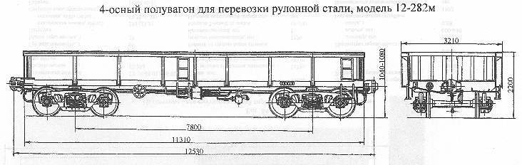

Назначение: для перевозки рулонной стали, не требующих защиты от атмосферных осадков
Параметры
| Номер проекта | 282.00.000-03 |
| Технические условия | ТУ 24.05.01.079-92 |
| Модель вагона | 12-282М |
| Тип вагона | |
| Изготовитель | АО "Алтайвагон" |
| Грузоподъемность, т | 70 |
| Масса тары вагона, т | 24 |
| Нагрузка: статическая осевая, кН(тс) |
230(23,5) |
| погонная, кН/м(тс/м) | 73,57(7,5) |
| Скорость конструкционная, км/ч | 120 |
| Габарит | 1-ВМ(0-Т) |
| База вагона, мм | 7800 |
| Длина, мм: по осям сцепления автосцепок |
12530 |
| по концевым балкам рамы | 11310 |
| Ширина максимальная, мм | 3210 |
| Высота от уровня верха головок рельсов, мм: максимальная |
2200 |
| до уровня верха рамы | 1286 |
| Количество осей, шт. | 4 |
| Модель 2-осной тележки | 18-100 |
| Наличие переходной площадки | нет |
| Наличие стояночного тормоза | есть |
| Внутренние размеры кузова, мм: ширина |
2790 |
| длина | 10624 |
| высота | 900 |
| Параметры перевозимых рулонов: диаметр, мм |
1600-1900 |
| высота, мм | 1400-1450 |
| масса, т | 3,5-18 |
| Год постановки на серийное производство | 1993 |
| Возможность установки буферов | нет |